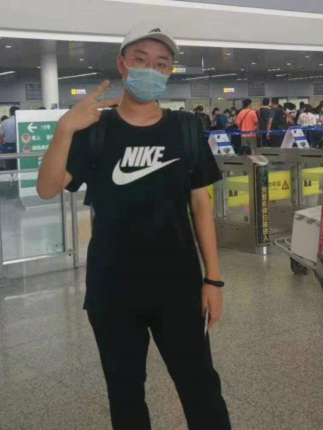

|
 |
Hanxun(Jonny) Yu 于瀚勋 Undergraduate Student (graduating in 2023). School of Computer Science, Wuhan University (WHU), China. Email: hanxun_yu@whu.edu.cn Wechat: hanxunyu828 |
I am a senior undergraduate student majoring in Computer Science and Technology in
Wuhan University, expected to graduate in 2023 and aiming for a PhD position for 2023 Fall.
I am forturnately to conduct research under the supervision by
Prof. Zheng Wang.
My research interest lies on Machine Learning, Computer Vision,
, etc. And I am always willing to communicate with motivated people.
Machine Learning
Computer Vision
Probability and Statistics
Deep Learning&Reinforcement learning
UG Research Assistant
Advisor: Chang D. Yoo
Topic: Study of Uncertainty in Bayesian Neural Network Prediction.
UG Research Assistant
Advisor: Xujie Si
Topic: Learning-based feedback propagation for programming assignments
UG Research Assistant
Advisor: Zheng Wang
Artificial Intelligence Internship Programme; Grade: A+
Advisor: Teoh Teik Toe
Algorithm Engineering Intern
1st Scholarship of Excellent Undergraduate Student(2020,2021)
National Encouragement Scholarship(2021)
Individual Scholarship(2020)
Merit Student(2020,2021)
Excellent League Member(2020,2021)
2nd prize of Mathematics Competition of Chinese College Student(2020)
2nd prize of National English Competition for College Students(2020)
Campus Ambassador in Wuhan University
Python, Java, C++, JavaScript
Pytorch, Tensorflow, LaTex